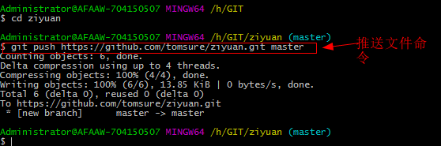

1、进入本地目录； 2、输入以下命令： git push https://github.com/tomsure/ziyuan.git master 这里的ziyuan.git指的相当于是本地工作目录中的文件  使用上面的命令git push +远程地址 的格式比较麻烦，可以设置一个代替远程地址的名字， 如图所示： 到时候直接输： "git push 代替远程仓库的名字 " master即可； 这个master指的是本地仓库分支 的名称，也可以修改 再来看看：